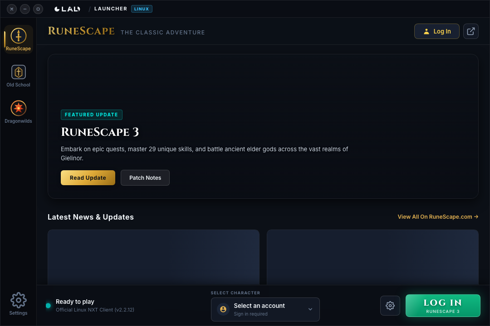

RuneScape on Linux.
Authentic. Native. Zero Wine.
A 1:1 replica of the official Jagex Launcher built specifically for Linux and SteamOS. Experience native 64-bit NXT performance, Old School RuneScape with RuneLite & HDOS, and RuneScape: Dragonwilds — with direct Jagex Account OAuth 2.0 PKCE authentication.
sudo add-apt-repository ppa:danielcook2016/linux-jagex-launcher && sudo apt install -y linux-jagex-launcher
One Launcher. Every RuneScape Adventure.
Designed from the ground up for native compatibility with official Jagex games and community clients.
RuneScape 3
Runs Jagex's official 64-bit native NXT client directly on your Linux kernel. No Wine prefixes, zero Proton latency, and maximum hardware acceleration.
-
Rootless User Auto-Deployment: Extracts the official client straight into userspace without
sudo. - OpenSSL 1.1 Isolation: Automatically supplies isolated compatibility libraries on Ubuntu 22.04, 24.04, and 26.04 LTS without altering host apt.
- Wayland & Mesa Zink Overrides: Eliminates "Loading application resources" startup freezes via automated X11/Pulse flags.
- Built-in RS3 Doctor: One-click system dependency, legacy APT repo cleanup & driver check in Settings.
Old School RuneScape
Enjoy full flexibility with your favorite clients. Injects your Jagex Account session tokens directly on launch.
-
RuneLite Integration: Automatically preserves your existing
~/.runeliteconfigurations, plugins, screenshots, and bank tags. - HDOS Support: Full compatibility with the 2008-era HD graphics engine running on OpenGL & Vulkan.
- Official C++ Client: Native OSRS desktop client support with direct Jagex single sign-on.
- Multi-Character Switching: Switch between your Jagex characters instantly from the main menu.
RuneScape: Dragonwilds
Launch Jagex's open-world survival action RPG in Ashenfall directly through native Linux Steam integration.
-
Direct Steam Protocol Launch: Integrates directly with
steam://run/1374490for instant play. - Live Steam RSS News & Patches: Real-time update cards and announcements pulled straight from Steam.
- Unified Interface: Jump between RS3, OSRS, and Dragonwilds within a single familiar launcher.
- Zero Extra Bloat: Lightweight client switcher with clean background process management.
Built with Precision & Respect for Your System
Official aesthetics with Linux power tools under the hood.
1:1 Authentic Jagex UI
Faithful replica of the official launcher with live event artwork, official Jagex server maintenance notices, and native left-side window controls.
Pre-Flight System Doctor
Integrated diagnostic tool in Settings that audits GPU drivers (OpenGL, Vulkan), display servers, and runtime packages with copyable fix commands.
Cloudflare Turnstile & PKCE
Direct OAuth 2.0 PKCE authentication with account.jagex.com. Built-in interactive view handles Turnstile bot checks and 2FA with zero credential leaks.
Zero RAM Mode ("Close on Launch")
Enable "Close on Launch" in settings to automatically terminate the launcher after your game starts, releasing 100% of memory for your games.
GameMode & MangoHud Ready
One-click toggles in Settings to engage Feral gamemoderun for CPU governor scheduling and mangohud for real-time FPS & frametime stats.
100% Privacy & Zero Telemetry
No telemetry, no tracking servers, and no analytics. Tokens and settings are stored strictly in local userspace (~/.config/linux-jagex-launcher/).
Install on Any Linux Distribution
Choose your distribution below for fast, automated setup.
The official Launchpad PPA provides packages built natively in Canonical's cloud builders for Ubuntu, Linux Mint, and Pop!_OS. System dependencies are resolved automatically, and updates arrive seamlessly via sudo apt upgrade.
sudo add-apt-repository ppa:danielcook2016/linux-jagex-launchersudo apt update && sudo apt install -y linux-jagex-launcherlinux-jagex-launcherPrefer direct .deb download, automated script, or Ubuntu 26.04 APT cleanup?
One-line automated installer (fetches v1.4.8, removes broken legacy Jagex trusty APT entries if present, and installs cleanly):
curl -sSL https://cook0001.github.io/Linux-Jagex-Launcher/install.sh | bashOr download the standalone .deb package manually:
curl -LO https://github.com/cook0001/Linux-Jagex-Launcher/releases/latest/download/jagex-launcher_1.4.8_amd64.deb && sudo apt install ./jagex-launcher_1.4.8_amd64.debSeeing NO_PUBKEY 7373B12CE03BEB4B or trusty InRelease is not signed on Ubuntu 24.04 / 26.04 ("Resolute Raccoon")? Remove Jagex's deprecated Ubuntu 14.04 repository left over from Jagex's old website instructions:
sudo rm -f /etc/apt/sources.list.d/runescape.list /etc/apt/sources.list.d/runescape.sources && sudo apt update
The official Fedora Copr repository provides packages built natively in Fedora's build infrastructure. Updates are delivered automatically via sudo dnf upgrade, or you can install the standalone .rpm directly.
sudo dnf copr enable -y cook0001/linux-jagex-launchersudo dnf install -y linux-jagex-launcherlinux-jagex-launcherPrefer direct standalone .rpm installation?
Download and install the standalone .rpm package directly with DNF:
curl -LO https://github.com/cook0001/Linux-Jagex-Launcher/releases/latest/download/linux-jagex-launcher-1.4.8.x86_64.rpm && sudo dnf install -y ./linux-jagex-launcher-1.4.8.x86_64.rpm
Install via standalone native .pacman binary package for instant setup, through an AUR helper, or with the local makepkg script:
curl -LO https://github.com/cook0001/Linux-Jagex-Launcher/releases/latest/download/linux-jagex-launcher-1.4.8.x64.pacman && sudo pacman -U ./linux-jagex-launcher-1.4.8.x64.pacmanyay -S linux-jagex-launcher-binparu -S linux-jagex-launcher-binmakepkg install from AUR:
git clone https://aur.archlinux.org/linux-jagex-launcher-bin.git && cd linux-jagex-launcher-bin && makepkg -si
Installs cleanly into ~/Applications/ without disabling SteamOS read-only mode. Automatically registers the Non-Steam shortcut, applies official high-res Steam Grid artwork (poster, banner, hero), and enables gamepad navigation.
Steam → Power → Switch to Desktop).
curl -sSL https://cook0001.github.io/Linux-Jagex-Launcher/deck-install.sh | bash
Official Canonical Snap package for Ubuntu, Debian, Fedora, Arch, and all snap-enabled distributions. Fully sandboxed with persistent multi-gigabyte cache storage in $SNAP_USER_COMMON.
sudo snap install linux-jagex-launchersudo snap connect linux-jagex-launcher:joystick && sudo snap connect linux-jagex-launcher:removable-medialinux-jagex-launcherDownload native packages and standalone binaries for any x86_64 Linux distribution:
curl -LO https://github.com/cook0001/Linux-Jagex-Launcher/releases/latest/download/Jagex-Launcher-1.4.8.AppImage && chmod +x Jagex-Launcher-1.4.8.AppImage && ./Jagex-Launcher-1.4.8.AppImageFUSE requirements for AppImage & SHA-256 checksum verification
For Fedora Workstation / Ubuntu 24.04+: ensure FUSE 2 runtime libraries are installed for AppImages:
sudo dnf install -y fuse-libs # or: sudo apt install -y libfuse2t64Verify Release Integrity against published SHA256SUMS.txt:
curl -LO https://github.com/cook0001/Linux-Jagex-Launcher/releases/latest/download/SHA256SUMS.txt && sha256sum -c SHA256SUMS.txt --ignore-missingFrequently Asked Questions
Answers regarding game security, anti-cheat, account migration, Ubuntu 26.04 compatibility, and performance tuning.
Will I get banned for using Linux Jagex Launcher?
No. This launcher does not modify game code, alter memory, intercept network packets, or inject unauthorized hooks into game clients. It utilizes official Jagex OAuth 2.0 PKCE authentication and passes standard session environment variables (JX_SESSION_ID, JX_CHARACTER_ID) directly to official, verified game binaries (RuneLite, HDOS, or native RuneScape 3).
How does RuneLite work? Do I lose my plugins or settings?
Your plugins, tile markers, bank tags, and configurations remain 100% untouched. The launcher launches RuneLite within your standard user home directory, preserving ~/.runelite while enabling in-game web links to open in your default Linux browser.
Can I play on Linux if I have migrated to a Jagex Account?
Yes! Migrated Jagex Accounts can no longer use legacy login screens. Linux Jagex Launcher executes the official OAuth 2.0 PKCE flow, handles Cloudflare Turnstile verification natively, and securely injects your active session into your selected game or client.
How does the native Linux RS3 client run without root?
The launcher unpacks Jagex's official Debian package into your local user data directory (~/.local/share/linux-jagex-launcher/client/) using userspace archive utilities (tar / ar), allowing it to install and update without ever requesting sudo or root privileges.
Why does RuneScape 3 freeze on "Loading application resources" and how do I fix it?
This freeze is typically caused by Wayland compositor conflicts with legacy GTK2/SDL2 or PulseAudio underruns. Linux Jagex Launcher resolves this automatically by enforcing GDK_BACKEND=x11, SDL_VIDEODRIVER=x11, PULSE_LATENCY_MSEC=100, unsetting XMODIFIERS, and providing an optional Mesa Zink (OpenGL over Vulkan) override in Settings.
How do I fix "NO_PUBKEY 7373B12CE03BEB4B" or "trusty InRelease is not signed" on Ubuntu 24.04 & 26.04?
Jagex's website still instructs Ubuntu users to add their deprecated Ubuntu 14.04 (trusty) APT repository (https://content.runescape.com/downloads/ubuntu) via sudo apt-key add -. On Ubuntu 24.04 LTS and Ubuntu 26.04 LTS ("Resolute Raccoon"), apt-key has been removed and APT 3.x strictly rejects unsigned / legacy SHA-1-signed repositories, causing sudo apt update to fail. Linux Jagex Launcher never uses that repository because it extracts the native RS3 client rootlessly in userspace. Remove the leftover repository file with sudo rm -f /etc/apt/sources.list.d/runescape.list /etc/apt/sources.list.d/runescape.sources && sudo apt update (or click Remove Legacy Repo inside Settings → Run Diagnostics).
How does the launcher resolve libssl1.1 on Ubuntu 22.04, 24.04, and 26.04?
Modern Ubuntu releases dropped libssl1.1. The native RS3 NXT client was linked against libssl.so.1.1 and crashes on clean installations. Rather than risking your package manager with old third-party packages, Linux Jagex Launcher extracts isolated libssl.so.1.1 libraries into userspace and injects LD_LIBRARY_PATH only for the game process, keeping your system 100% clean.
Does it support Feral GameMode and MangoHud?
Yes! Both Feral GameMode (gamemoderun) and MangoHud can be toggled on/off in the Launcher Settings modal for high-performance CPU governor scheduling and real-time performance overlays.
Help Shape Linux Jagex Launcher
Whether you are running RuneScape 3 on Arch, Old School on Steam Deck, or playing on Ubuntu 26.04 — your feedback helps us prioritize features, fix quirks, and deliver the best native Linux gaming experience.